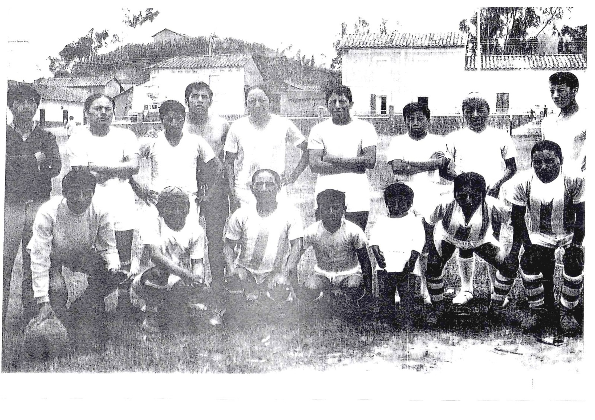

Nuestra cultura es un reflejo de nuestras raíces, tradiciones y valores. A través de los años, hemos preservado nuestras costumbres, música, danzas y gastronomía, que son el alma de nuestra identidad. Cada rincón de nuestra tierra cuenta una historia, y cada tradición es un legado que compartimos con orgullo.
Preservar y difundir la historia, tradiciones y valores de la comunidad Jatuntaqui, pueblo indígena Kichwa Otavalo, a través de la memoria colectiva y el legado de nuestros ancestros. Queremos compartir con el mundo cómo iniciativas simples, como el fútbol entre vecinos y el equipo Atahualpa, se convirtieron en símbolos de unidad, identidad y alegría. Nuestra página web busca ser un puente entre generaciones, rescatando anécdotas, costumbres y la riqueza cultural que nos define.
Ser un referente digital de la cultura Jatuntaqui, donde las nuevas generaciones y el mundo conozcan nuestra historia auténtica, desde los relatos de nuestros mayores hasta las expresiones contemporáneas de nuestra comunidad. Aspiramos a que esta plataforma fortalezca el orgullo identitario, inspire la preservación de nuestras raíces y fomente la conexión entre comunidades indígenas y aliados globales, siempre bajo el espíritu de "jugar, compartir y vivir nuestra cultura", tal como lo hicieron nuestros antepasados.